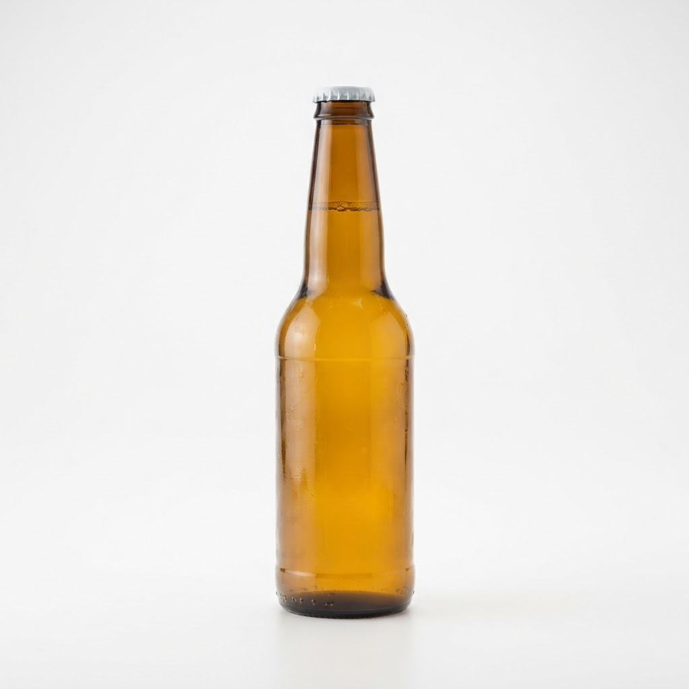

Доставка алкоголя спб с доставкой в Василеостровском районе

Васильевский остров славится своими гранитными набережными и тайнами старых дворов, но ночью здесь бывает сложно найти открытый магазин. Оперативная доставка алкоголя СПб с доставкой в Василеостровском районе решает эту проблему, позволяя насладиться вечером без лишних забот о поиске нужных напитков.
Как организована быстрая доставка алкоголя СПб с доставкой в Василеостровском районе
Наша логистика выстроена с учетом специфики островной застройки и разводки мостов. Мы держим дежурных курьеров непосредственно в границах района, что позволяет соблюдать строгий регламент. Главный приоритет — ночная доставка за час, вне зависимости от дорожной обстановки или удаленности вашего дома. Процесс максимально упрощен: вы оформляете заявку, оператор фиксирует адрес, а водитель сразу отправляется в путь. Мы используем навигационные карты с учетом текущих дорожных работ, чтобы объезжать заторы и избегать задержек. Каждая бутылка упаковывается в термозащитный материал, сохраняя оптимальную температуру напитка. Наша команда знает каждый переулок и въезд во двор, что исключает блуждание курьера в поисках нужного парадного. Мы гарантируем пунктуальность и вежливое обслуживание на каждом этапе выполнения заказа.
Почему выбирают наш сервис для вечернего заказа
Основным преимуществом является предсказуемость. Заказывая у нас, вы получаете не только напитки, но и уверенность в получении товара в течение шестидесяти минут. Мы отказались от лишних посредников, работая напрямую с курьерской службой, что сокращает время обработки каждой заявки. Наши сотрудники проходят инструктаж по правилам транспортировки хрупких грузов. Это значит, что содержимое останется в целости и сохранности даже при быстрой езде. Мы понимаем ценность вашего времени, поэтому курьер никогда не попросит вас выйти к машине — доставка всегда осуществляется до двери. Такой подход позволяет нам удерживать лидерские позиции в секторе экспресс-обслуживания на Васильевском острове. Мы ценим комфорт клиентов и стремимся к тому, чтобы ночной сервис был таким же удобным, как посещение обычного магазина днем.
Можно ли оформить заказ, если мосты уже разведены
Да, наши курьеры работают внутри острова без необходимости пересечения разводных пролетов. Мы успешно справляемся с задачами в ночное время, обеспечивая доставку точно в срок. Вы можете рассчитывать на нас даже в самые поздние часы. Вывод: Мы обеспечиваем оперативность и качество, доставляя выбранные напитки в течение часа по всему Василеостровскому району.
Итог
Итог всегда один: назвать следующий шаг покупателю — оформить заказ и получить его в течение часа в своём районе.
Заказать доставку
Оформите заказ сейчас: привезём за 40-60 минут в любой район Петербурга, круглосуточно.
Призыв
Сколько стоит купить ящик пива спб с доставкой в Василеостровском районеВасильевский остров славится своими лабиринтами улиц и ночной жизнью, где потребность в качественном отдыхе возникает внезапно. Оперативная логистика позволя… Доставка коньяка на дом спб с доставкой в Василеостровском районеВасилеостровский район — это лабиринт из линий, где ночная жизнь затихает лишь под утро. Когда привычные магазины закрыты, доставка коньяка на дом спб с дост…
Доставка коньяка на дом спб с доставкой в Василеостровском районеВасилеостровский район — это лабиринт из линий, где ночная жизнь затихает лишь под утро. Когда привычные магазины закрыты, доставка коньяка на дом спб с дост…